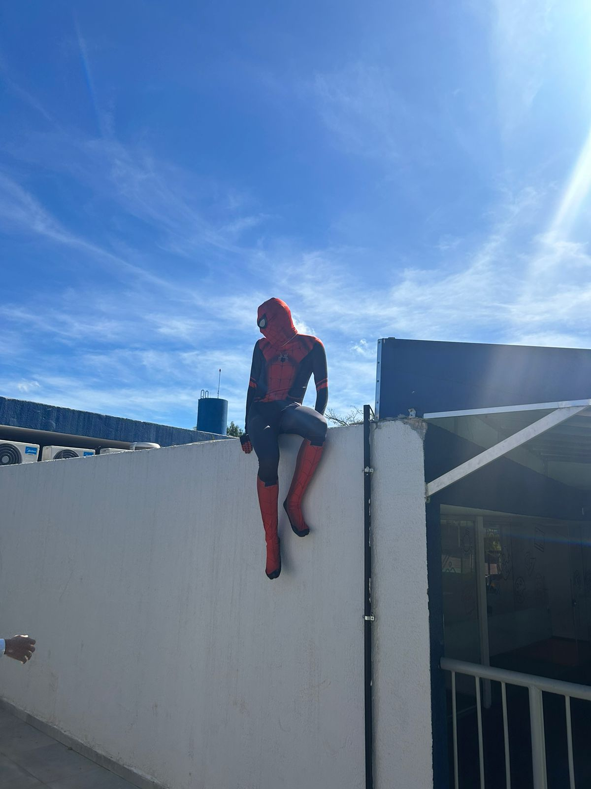
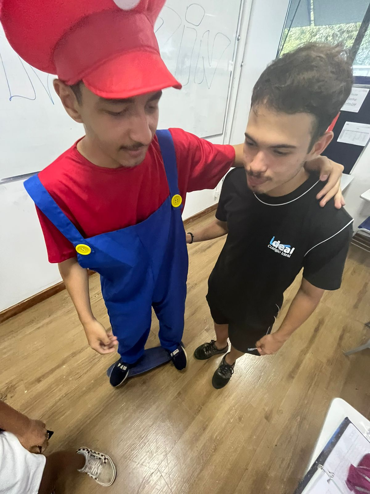
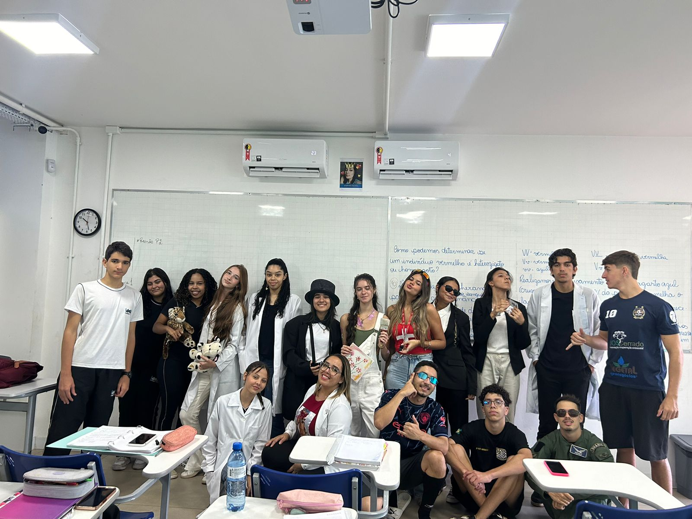

30/01/2024 - Primeiro Dia
Este primeiro dia foi uma maluquice e nunca imaginaria que iria me dar bem com uma turma nova, mas deu bom, o Pedro parecia todo seriozão lá no canto dele, lembro que eu e o Matheus achavamos que o prof Matheus de física tinha bebido antes da aula. No primeiro dia de aula do Esdras também foi muito engraçada, pois a gente pensava que ele ficava zuando de ser mudo.
22/02/2024 até alguns dias ai - Bagunça de Padrinho
Apartir deste dia começou uma discussão enorme sobre padrinho para nossa turma, nesta época todos os outros terceiros das outras unidades já tinham escolhido o deles e a gente lá de bobeira, rolou até um impeachment, mas no final definiram a Dulce
14/03/2024 - Trote Moda
Este trote foi incrível, engraçado e rendeu alguns vídeos muito engraçados
20/03/2024 - Pedido de madrinha
Este dia foi o dia onde pedimos a Dulce para ser nossa madrinha, ela chorou, gostou muito, fizemos uma espécie de "casamento".
24/04/2024 - Trote Personagens
Esse trote foi o melhor o João estava de homem aranha e subiu num trem lá, eu estava de mario e as crianças começaram a correr atrás de mim, teve um lanche coletivo também.
 23/05/2024 - Trote profissões
Esse trote foi legalzinho, não se compara com o dos personagens, mas foi bom.
29/05/2024 - FunnFestival
Esse dia foi legal, só um pouco desorganizado por conta da bluh, mas tudo bem, de tarde teve um momento de passeio pelo parque da funn e de noite teve o show do L7, cabelinho e chefin, nesse dia meu celular acabou a bateria e minha mãe ficou brava demais, mas no final deu tudo certo
01/07/2024 - Sinusi
Neste dia tivemos muitos estresses, mas também muitas risadas, chegamos a passar para a próxima fase do futvolêi e conseguimos ganhar no futebol, este dia seria melhor, se as partidas não fosse tão curtas
14/08/2024 - Trote motoqueiros x surfistas
Teve o trote dos motoqueiros x surfistas, na minha humilde opnião foi o pior, mas tudo bem, o que importa é fazer uma graça.
16/08/2024 - Fotos da formatura
Tiramos a foto individual e da turma para a formatura, neste momento descobri que só o menor menino da sala, isso foi triste, mas releva, fizemos algumas fotos da turma séria e outras zuando, na foto individual tivemos que vestir a beca e fazer umas poses que o cara calvo e barbudo pedia para fazer
23/08/2024 - BluhDay
Ocorreu o BluhDay, que foi uma tarde onde os formandos de todas as unidades se juntaram para se divertir, lá tinha comidas, touro mecânico, futebol de sabão e pscina, onde lá a Júlia beijou o pão de queijo e o ex da Maria, era muito chato, foi um dia muito divertido.
27/08/2024 - Saída de campo para a faculdade
Ocorreu uma saída de campo a uma faculdade particular, onde alguns alunos do terceiro foi, lá tinha opções das áres de medicina e T.I